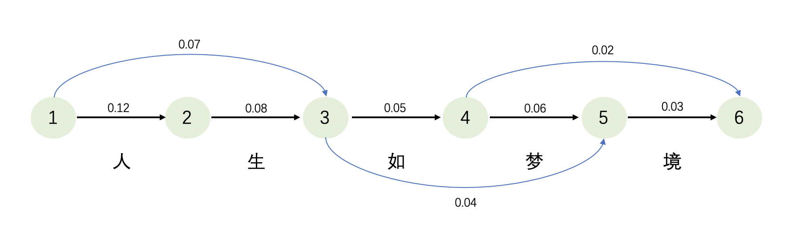
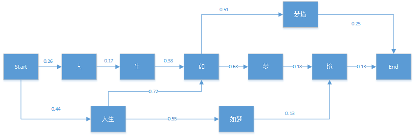

在做文本挖掘的时候, 一般来说首先要做的就是分词.
英文单词天然有空格, 容易分词, 但有时候也需要把多个单词视作一个单词, 如一些名词”New York”.
中文没有空格, “句读之不知, 惑之不解”, 相比古文, 如今的中文分词相对容易, 不过仍是一个需要专门去解决的问题.
分词的方法有很多种, 但常用的基本都是基于词典的分词, 下面讲解最大匹配法, 以及结合语言模型的维特比算法. HMM和CRF使用基于序列标注的方法也能够用来分词, 不过这里不做介绍.
最大匹配法(Maximum Matching)
最大匹配法非常简单, 就是以词典为依据, 依次从最长的单词开始进行扫描, 试图获得单词颗粒度较大的划分.
主要包括正向最大匹配法, 反向最大匹配法, 以及双向最大匹配法.
只要明白了正向最大匹配法的原理, 反向最大匹配法就是换了一个扫描方向而已. 双向最大匹配法指的是各自执行一次正向/反向最大匹配法, 然后比较两者结果, 取大颗粒度的词越多, 非词典词和单字词越少的划分结果, 作为最终结果.
所以, 下面主要就说明正向最大匹配法的原理, 举个栗子来说明.
比如现在有一个待分词的句子”我们在野生动物园玩”.
同时有一个词典{“我们”, “在”, “在野”, “生动”, “野生”, “动物园”, “野生动物园”, “物”, “玩”}.
词典最大长度为5.
第一轮扫描:
- “我们在野生”, 扫描词典, 无.
- “我们在野”, 扫描词典, 无.
- “我们在”, 扫描词典, 无.
- “我们”, 扫描词典, 有.
第一轮扫描结束, 划分出”我们”, 将”我们”排除后, 进行第二轮扫描.
第二轮扫描:
- “在野生动物”, 扫描词典, 无.
- “在野生动”, 扫描词典, 无.
- “在野生”, 扫描词典, 无.
- “在野”, 扫描词典, 有.
第二轮扫描结束, 划分出”在野”, 将”我们在野”排除后, 进行第三轮扫描.
……
最终我们得到划分结果为”我们/在野/生动/物/园/玩”, 挺离谱的…
在这里用同样的语句和词典, 使用反向最大匹配法, 得到的划分结果为”我们/在/野生动物园/玩”, 完全正确!
那是不是就说反向最大匹配法比正向匹配法好呢, 当然不一样, 所以实际使用时可以尝试双向最大匹配法.
最大匹配法有如下一些特点:
- 优点:
- 算法流程简单, 设计合理可以并行化. 如将不同长度的词典分开, 在扫描时根据长度选择不同词典.
- 缺点:
- 需要给定词典, 存在OOV, 即未登录词的问题.
- 词典中词较少, 则影响准确率; 词典中词较多, 则影响运行效率.
结合语言模型的维特比算法
在上一篇中, 介绍了语言模型, 其作用通俗来说, 就是可以判断给定的一段语言序列, 是否像是”人话”; 或者也可以对于给的两段语言序列, 判断哪一句更像是”人话”.
于是, 对于一段待分词的句子, 我们可以穷尽所有可能的划分方式, 然后让语言模型从中找出联合概率分布最大的划分方式, 作为最优的划分.
然鹅, 我们都知道, 暴力法是不可取的(或许未来量子计算机可以这么玩), 所以需要有更低时间复杂度的算法, 来在众多划分方式中, 搜索得到语言模型认为最优的划分方式.
算法的名称, 就是大名鼎鼎的维特比算法, 是一种动态规划算法, 不仅在这里, 在其它一些与序列相关, 寻找最长/最短路径的场景下, 也能看到它的身影.
为了清楚地说明维特比算法如何应用于分词, 仍然是举栗子. 这里分别以基于Unigram语言模型, 和Bigram语言模型来讲解.
基于Unigram
现在给定一个句子, “人生如梦境”, 正确的划分方式, 应该是”人生/如/梦境”.
词典为{“人”, “人生”, “生”, “如”, “如梦”, “梦”, “梦境”}.
语言模型为Unigram.

如上图, 首先根据词典以及语言模型构建一个有向无环图, 其中的连边, 代表了连边首尾节点之间的词的概率(图上是随意设置的).
既然我们想要找到联合概率最大的划分方式, 那么在这里等价于找到一条路径, 使得其对应的长度(概率)最长.
使用维特比算法, 使用动态规划的方式. 采取如下步骤:
假设到节点6, 最大路径长度为$f(6)$, 其中$f$表示以某节点为最后节点时, 最优划分方式对应的最大路径长度(概率).
节点6可以由节点5与节点4到达, 那么可以得到递归方程:
接下来查看$f(5)$, 节点5可以由节点4和节点3到达, 又可以得到递归方程:
逐步向前递归……
当碰到$f(1)$时, 返回$f(1)=1$, 从而可以求解出$f(2)\sim f(6)$. 同时, 每次记录到达的节点.
对于节点6, 通过反推其到达的节点(节点4, 节点3, 节点1), 即可得到划分结果, “人生/如/梦境”.
以上就是维特比算法的过程, 当然, 细心的同学可能发现了, 万一语言模型给出的概率特别小, 再连乘很多次……所以, 可以先将概率取负对数, 这样可以避免连乘结果趋于零的问题, 不过从原本求最长路径, 变成了求最短路径, 递归方程里面的$\times$需要变成$+$, 并且$f(1)$此时等于0.
基于Bigram
在明白了基于Unigram语言模型的维特比算法后, 基于Bigram的算法是类似的, 这里就不做过多讲解了.

如上图, 发现基于Bigram的有向无环图与基于Unigram的不太一样, 多了起始符$<{\rm start}>$和结束符$<{\rm end}>$, 同时字词本身变成了节点. 其实虽然看起来不一样, 本质上都是有向无环图, 连边表示语言模型的概率, 对于Bigram来说这样分析更加方便.
在使用维特比算法时, 从$f(<{\rm end}>)$开始向前递归, 然后记录每个节点的最优到达路径, 最后也就得到了最优划分.
jieba分词
分词工具有不少, 这里介绍jieba分词.
“结巴”中文分词：做最好的 Python 中文分词组件
核心算法
- 基于前缀词典(一种树状的数据结构)实现高效的词图扫描, 生成句子中汉字所有可能成词情况所构成的有向无环图 (DAG).
- 采用了动态规划查找最大概率路径, 找出基于词频的最大切分组合. 即与上文所讲算法一样.
- 对于未登录词, 采用了基于汉字成词能力的 HMM 模型处理. 利用HMM对未出现在词典中的词, 进行序列标注(词首, 词中, 词尾)来进行分词.
分词
主要支持四种分词模式, 精确模式, 全模式, 搜索引擎模式, paddle模式. 其中paddle模式需要安装额外的Python包, 这里不做介绍.
精确模式, 试图将句子最精确地切开, 适合文本分析.
1 | Signature: jieba.cut(sentence, cut_all=False, HMM=True, use_paddle=False) |
1 | import jieba |
1 | 我/来到/北京/清华大学 |
1 | # 包含"杭研"未登录词时, 关闭HMM的新词发现功能 |
1 | 他/来到/了/网易/杭/研/大厦 |
1 | # 包含"杭研"未登录词时, 打开HMM的新词发现功能 |
1 | 他/来到/了/网易/杭研/大厦 |
全模式, 把句子中所有的可以成词的词语都扫描出来, 速度非常快, 但是不能解决歧义.
1 | # 全模式 |
1 | 我/来到/北京/清华/清华大学/华大/大学 |
搜索引擎模式, 在精确模式的基础上, 对长词再次切分, 提高召回率, 适合用于搜索引擎分词.
1 | Signature: jieba.cut_for_search(sentence, HMM=True) |
1 | # 搜索引擎模式 |
1 | 我/来到/北京/清华/华大/大学/清华大学 |
自定义词典
可以载入自定义词典, 以便包含jieba词库里没有的词. 虽然jieba有新词识别能力, 但是自行添加新词可以保证更高的正确率.
用法为jieba.load_userdict(file_name) , 其中file_name为文件类对象或自定义词典的路径. 或者使用jieba.set_dictionary(file_name)进行永久替换.
词典格式为一个词占一行, 每一行分三部分: 词语, 词频(可省略), 词性(可省略), 用空格隔开, 顺序不可颠倒. file_name 若为路径或二进制方式打开的文件, 则文件必须为 UTF-8 编码. 例如:
1 | 云计算 5 |
词频省略时使用自动计算的能保证分出该词的词频.
此外, 还可以使用add_word(word, freq=None, tag=None)和del_word(word)可在程序中动态修改词典.
1 | Signature: jieba.add_word(word, freq=None, tag=None) |
1 | import jieba |
1 | 我/来到/北京/清华大学 |
使用suggest_freq(segment, tune=True)可调节单个词语的词频, 使其能(或不能)被分出来. 需要注意的是, 该方法有时候对HMM的结果无效, 所以若分词结果与调整不符, 尝试关闭HMM.
1 | Signature: jieba.suggest_freq(segment, tune=False) |
1 | import jieba |
1 | 我/来到/北京/清华大学 |